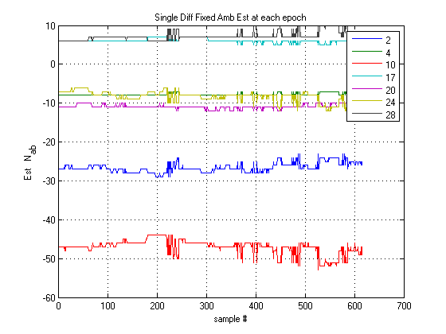
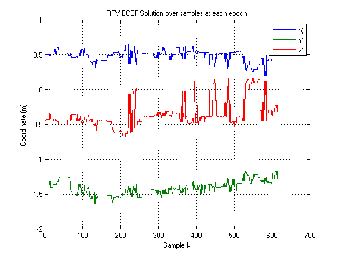
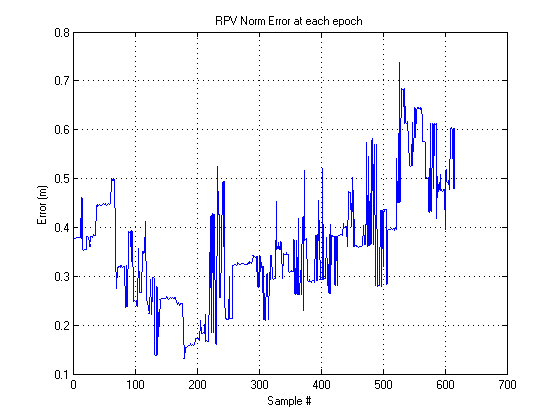
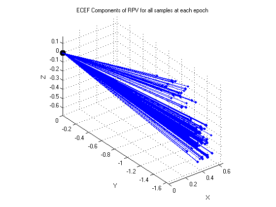
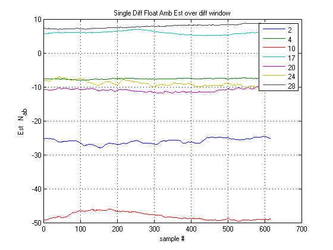
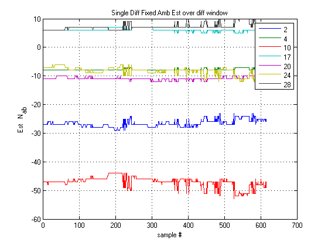
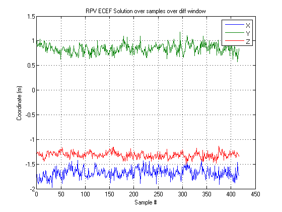
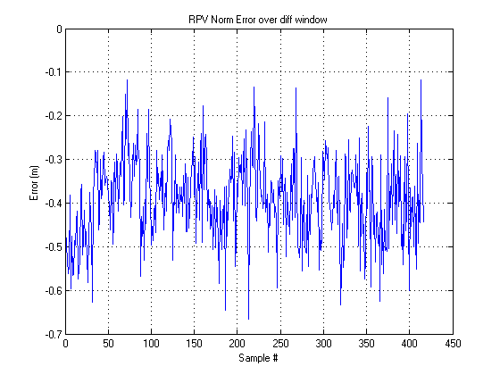
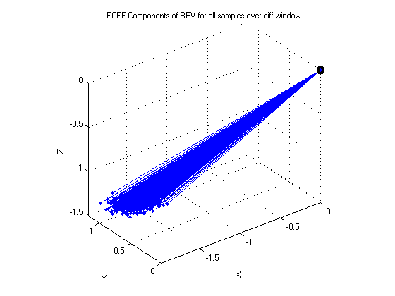

Contents
- MECH 6970 Lab 3, Part 2, c)
- Parameters
- Calculate SV Positions from Ephemeris, Relativistic Clock Correction
- Single Differencing, using carrier phase DGPS at every time epoch
- Attitude Between Antennas
- Plot Single Differencing Results
- Single Differencing, using Carrier DGPS over diff window
- Attitude Between Antennas - Carrier Phase over differencing window
- Plot Single Differencing results for calculation over differencing window
- End matters
MECH 6970 Lab 3, Part 2, c)
Robert Cofield
Note that for this you need the lambda source code in the `misc` folder added to your path
SV 12 (index 4) comes in just before sample # 200. For this approach, SV 12 was simply excluded from the entire dataset, so that covariance for the floating ambiguity could be calculated
clear all; close all; clc tic part2c_load_data % try % matlabpool(3) % comment this out if you don't have the parallel toolbox % end
Parameters
c = 299792458; % Speed of light, m/s fL1 = 1575.42e6; % L1 frequency, Hz fL2 = 1227.60e6; % L2 frequency, Hz wavelengthL1 = c/fL1; wavelengthL2 = c/fL2; lla_user_est = [dms2deg([32,35,26.1]), -dms2deg([85,29,20.61]), 205]; % lat lon alt rpv_norm_true = 1.904; rpv_guess = [.1;.1;.1]; bias_guess = 1; pos_tol = 0.0001; maxit = 100;
Calculate SV Positions from Ephemeris, Relativistic Clock Correction
ecef_user_est = wgslla2xyz(lla_user_est(1),lla_user_est(2),lla_user_est(3)); ephem_mat = zeros(21,nsv); ephem_time = zeros(1,nsv); % gps seconds into subplot(week at which ephem was transmitted sv_clkcorr = zeros(nsv,ndat); sv_clkcorr_psr = zeros(size(sv_clkcorr)); % range correction corresponding to clock correction svpos = zeros(3,nsv,ndat); % svpos_psr = zeros(nsv,ndat); % pseudorange using estimated user pos and svpos - error checking svelev = zeros(nsv,ndat); % psrL1r0corr = zeros(size(psrL1r0)); % psrL1r1corr = zeros(size(psrL1r1)); transit_time_est = 20e6/c; % seconds % turn adr into car carL1r0 = -adrL1r0*wavelengthL1; carL1r1 = -adrL1r1*wavelengthL1; for i = 1:nsv % get the ephemeris matrix into the correct format [ephem_mat(:,i), ephem_time(i)] = ephem_novatel2gavlab(ephem_mat_novatel(:,i)); % Find the SV Position at each of the measurement epochs we have ephem_mat_ = ephem_mat(:,i); for k = 1:ndat tx_time = time(k);%-transit_time_est; [svpos(:,i,k), sv_clkcorr(i,k)] = calc_sv_pos(ephem_mat_, tx_time, transit_time_est); sv_clkcorr_psr(i,k) = sv_clkcorr(i,k)*c; % psrL1r0corr(i,k) = psrL1r0(i,k) + sv_clkcorr_psr(i,k); % psrL1r1corr(i,k) = psrL1r1(i,k) + sv_clkcorr_psr(i,k); % carL1r0corr(i,k) = carL1r0(i,k) + sv_clkcorr_psr(i,k); % carL1r1corr(i,k) = carL1r1(i,k) + sv_clkcorr_psr(i,k); % % check position using approx psr % if psrL1r0(i,k) % svpos_psr(i,k) = norm( svpos(:,i,k)-ecef_user_est ,2); % end end end % Apply clock corrections psrL1r0corr = psrL1r0 + sv_clkcorr_psr; psrL1r1corr = psrL1r1 + sv_clkcorr_psr; carL1r0corr = carL1r0 + sv_clkcorr_psr; carL1r1corr = carL1r1 + sv_clkcorr_psr; % % Plot the SV history % plot_svpos(svpos,ecef_user_est,prns_label); % % % find the elevation of each satellite at each epoch % for k = 1:ndat % [~,svelev(:,k)] = calc_azel(ecef_user_est',reshape(svpos(:,:,k),nsv,3)); % end % % Find the elevation of each at the beginning % ecef_user_est = wgslla2xyz(lla_user_est(1), lla_user_est(2), lla_user_est(3)); % svpos0 = reshape(svpos(:,:,end),8,3); % [~,elevation] = calc_azel(ecef_user_est',svpos0); % % Look at SV position LLA just to check the positions % svpos_lla = zeros(size(svpos)); % for i = 1:nsv % for k = 1:ndat % [lat, lon, alt] = coordutil.wgsxyz2lla(svpos(:,i,k),1000); % svpos_lla(:,i,k) = [lat, lon, alt]; % end % end % % output LLA sv pos initial to KML file % kml_f_svpos0 = kml_file.createFolder('SV Initial Positions'); % for k = 1:8 % kml_f_svpos0.point(svpos_lla(2,k,1),svpos_lla(1,k,1),svpos_lla(3,k,1)); % end clear i k svpos0 ephem_mat_novatel
Single Differencing, using carrier phase DGPS at every time epoch
Not in the book, use LSE for problem as arranged in the class notes
fprintf('Single Difference Results for Carrier Phase at every time epoch\n') carL1r01sd = carL1r1 - carL1r0; psrL1r01sd = psrL1r1 - psrL1r0; % this includes the SV that comes in later - as zero until it arrives Nsd01_float = (carL1r01sd- psrL1r01sd)/wavelengthL1; amb_cov_all = cov(Nsd01_float'); afixed = zeros(size(Nsd01_float)); rpv01 = zeros(3,ndat); rpv_norm = zeros(1,ndat); bias01 = zeros(1,ndat); iterations = zeros(1,ndat); dop = zeros(5,ndat); rpv_norm_error = zeros(1,ndat); for k = 1:ndat afixed_cands = LAMBDA(Nsd01_float(:,k),amb_cov_all)'; afixed(:,k) = afixed_cands(1,:); % use the first candidate % Find relative Position carsd = carL1r01sd(:,k); af = afixed(:,k); svp = reshape(svpos(:,:,k),nsv,3); [rpv_soln, bias_soln, itx, dop_] = CarSfRpvSD_LSE(carsd,af,wavelengthL1,svp,rpv_guess,bias_guess,pos_tol,maxit); rpv01(:,k) = rpv_soln; bias01(k) = bias_soln; iterations(k) = itx; dop(:,k) = dop_; rpv_norm(k) = norm(rpv_soln); rpv_norm_error(k) = rpv_norm_true-rpv_norm(k); end fprintf('\tMean Range Error: %8f m\n',mean(rpv_norm_error)); fprintf('\tStd Range Error: %8f m\n',std(rpv_norm_error));
Single Difference Results for Carrier Phase at every time epoch Mean Range Error: 0.360212 m Std Range Error: 0.120458 m
Attitude Between Antennas
rpv_mean = mean(rpv01,2);
rpv_mean_enu = coordutil.rotxyz2enu(rpv_mean, lla_user_est(1),lla_user_est(2));
azimuth = rad2deg(atan2(rpv_mean_enu(1),rpv_mean_enu(2)));
ground_proj = norm(rpv_mean_enu(1:2));
elevation = rad2deg(atan2(rpv_mean_enu(3),ground_proj));
fprintf('\tAzimuth: %8f deg\n\tElevation: %8f deg\n',azimuth,elevation);
Azimuth: 161.316736 deg Elevation: 41.820444 deg
Plot Single Differencing Results
figure; plot(Nsd01_float'); title('Single Diff Float Amb Est at each epoch'); ylabel('Est N_{ab}'); xlabel('sample #'); legend(prns_label); grid on figure; plot(afixed'); title('Single Diff Fixed Amb Est at each epoch'); ylabel('Est N_{ab}'); xlabel('sample #'); legend(prns_label); grid on figure; plot(rpv01') title('RPV ECEF Solution over samples at each epoch'); ylabel('Coordinate (m)'); xlabel('Sample #'); legend('X','Y','Z'); grid on; figure; plot(rpv_norm_error); title('RPV Norm Error at each epoch'); ylabel('Error (m)'); xlabel('Sample #'); grid on; figure; plot3(0,0,0,'k.','MarkerSize',30); hold on for k = 1:ndat plot3([0 rpv01(1,k)],[0 rpv01(2,k)],[0 rpv01(3,k)],'-b.') end figutil.xyzlabel; title('ECEF Components of RPV for all samples at each epoch'); grid on; axis equal;   
Single Differencing, using Carrier DGPS over diff window
book, pg 246
fprintf('Single Difference results for Carrier Phase over Differencing Window\n'); window = 100; % 1/2 the number of samples to spread diff by rpv01 = zeros(3,ndat-2*window); rpv_norm = zeros(1,ndat-2*window); rpv_norm_error = zeros(1,ndat-2*window); bias = zeros(1,ndat-2*window); dop = zeros(5,-2*window); for k = 1+window:ndat-window dcar = carL1r01sd(:,k+window) - carL1r01sd(:,k-window); G1 = calc_geometry_matrix(ecef_user_est',svpos(:,:,k+window)'); G0 = calc_geometry_matrix(ecef_user_est',svpos(:,:,k-window)'); dG = [G1-G0 ones(nsv,1)]; est = pinv(dG)*dcar; rpv01(:,k-window) = est(1:3); rpv_norm(k-window) = norm(est(1:3)); rpv_norm_error(k-window) = rpv_norm_true - rpv_norm(k-window); bias(k-window) = est(4); dop(:,k-window) = gps.calcDOP(dG); end fprintf('\tMean Range Error: %8f m\n',mean(rpv_norm_error)); fprintf('\tStd Range Error: %8f m\n',std(rpv_norm_error));
Single Difference results for Carrier Phase over Differencing Window Mean Range Error: -0.390377 m Std Range Error: 0.097033 m
Attitude Between Antennas - Carrier Phase over differencing window
rpv_mean = mean(rpv01,2);
rpv_mean_enu = coordutil.rotxyz2enu(rpv_mean, lla_user_est(1),lla_user_est(2));
azimuth = -rad2deg(atan2(rpv_mean_enu(1),rpv_mean_enu(2)));
ground_proj = norm(rpv_mean_enu(1:2));
elevation = -rad2deg(atan2(rpv_mean_enu(3),ground_proj));
fprintf('\tAzimuth: %8f deg\n\tElevation: %8f deg\n',azimuth,elevation);
Azimuth: 110.026365 deg Elevation: 41.795599 deg
Plot Single Differencing results for calculation over differencing window
figure; plot(Nsd01_float'); title('Single Diff Float Amb Est over diff window'); ylabel('Est N_{ab}'); xlabel('sample #'); legend(prns_label); grid on figure; plot(afixed'); title('Single Diff Fixed Amb Est over diff window'); ylabel('Est N_{ab}'); xlabel('sample #'); legend(prns_label); grid on figure; plot(rpv01') title('RPV ECEF Solution over samples over diff window'); ylabel('Coordinate (m)'); xlabel('Sample #'); legend('X','Y','Z'); grid on; figure; plot(rpv_norm_error); title('RPV Norm Error over diff window'); ylabel('Error (m)'); xlabel('Sample #'); grid on; figure; plot3(0,0,0,'k.','MarkerSize',30); hold on for k = 1:length(rpv01) plot3([0 rpv01(1,k)],[0 rpv01(2,k)],[0 rpv01(3,k)],'-b.') end figutil.xyzlabel; title('ECEF Components of RPV for all samples over diff window'); grid on; axis equal;    
End matters
% try % matlabpool close % end toc
Elapsed time is 9.204618 seconds.